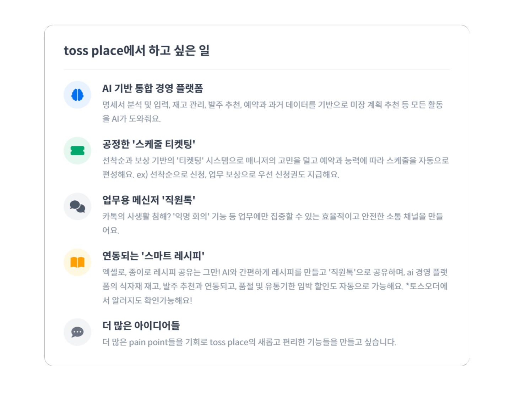

김도영 (1998.05.28)
외식업의 'Pain Point'를 현장에서 발견하고, 기술(Code)과 법률(Law)을 넘나들며,
사업 모델로 완성하는 문제 해결사.
외식업에 대한 깊은 이해를 바탕으로, 데이터 기반의 가설을 수립하고 제품의 성장을 드라이브하는,
'창업가형 Product Owner'입니다.
Projects & Experience
1. 문제 정의
- 사장님: 6년 이상의 외식 현장 경험을 통해, 사장님들이 매일 겪는 수기 명세서 입력, 주먹구구식 원가 관리 등 운영 비효율로 인한 '숨겨진 비용'이 수익성을 악화시키는 문제점을 발견했습니다.
- CJ그룹: 3,100만 CJ ONE 회원을 보유했음에도, '골목상권'에서의 고객 데이터가 단절되어 있고, 포인트 생태계가 CJ 계열사에만 갇혀 있어 오프라인 결제 시장의 성장 기회를 놓치고 있었습니다.
2. 가설 수립
- "만약 소상공인에게 AI 기반의 All-in-One 경영 솔루션을 제공한다면, 그 대가로 전국 수십만 개의 매장을 CJ ONE 결제망의 '오프라인 단말기'로 확보할 수 있을 것이다."
- "이를 통해 확보된 결제 수수료, '플로트' 자금과 독점적 데이터는 그룹의 새로운 핵심 수익원이 될 것이다."
- "오프라인에서 확보한 CJ Pay의 고객들에게 CJ계열사 프로모션을 제공하여 강력하게 CJ그룹에 락인할 수 있을 것이다."
3. 실행 및 본인의 기여
- 사업 모델 총괄 기획: 구독료, 데이터 판매, '플로트' 자금 운용 수익 등 다각화된 수익 모델을 설계하고, 사업의 10년치 상세 재무 계획을 수립했습니다.
- 기술 검증: 아이디어의 실현 가능성을 증명하기 위해, Python을 활용하여 AI 기반 거래명세서 OCR 분석 및 발주 자동등록 프로토타입을 직접 기획하고 개발하였고, 수기 입력 시간을 90% 이상 단축할 수 있음을 데이터로 증명하였으며, 더 나아가 등록된 데이터를 통하여 실시간 매입단가 변동 및 원가분석이 가능하였습니다.
- 법률 리스크 분석 및 완화: 공정거래법(끼워팔기), 전자금융거래법(선불충전 한도), 금산분리 등 핵심 법률 리스크를 분석하고, '사장님 광장(공개 입찰)', '데이터 금고(수익 공유)' 등 리스크를 회피하는 개방형 플랫폼 구조를 설계했습니다.
4. 결과 및 배운 점
- 결과: 최종 선발되지는 못하였으나, 심사 과정에서 운영진으로부터 '반드시 실행해야 할 사업'이라는 강한 공감을 얻으며, 아이디어의 시장 가치를 객관적으로 검증받았습니다.
- 이슈 및 러닝 포인트: 아이디어의 가치와 별개로, 운영진의 공감을 받았지만, 최종 승인이 이뤄지지 않아, 더 빠른 실행력과 자율성을 가진 애자일 조직인 토스에서 실현하고 싶은 계기가 되었습니다.
문제 해결 및 법률/기술 적용 사례
- 문제: 외국어 고등학교 복무 중, 상/벌점 관리 등 반복적인 엑셀 업무로 인한 행정력 낭비.
- 실행:
-Python을 독학하여, '디스코드' 봇과 연동되는 학생 관리 자동화 프로그램을 개발. 칭찬/벌점 입력, 조회, 엑셀 실시간 저장을 자동화.
-구글 클래스룸 숙제 검사 자동화.
-PC 미사용 시 PC잠금 기능. - 결과: 선생님들의 반복 업무 시간을 95% 이상 단축하고, 데이터의 정확성을 높여 업무 효율을 극대화. 아이디어를 현실로 만드는 기술적 실행력을 증명.
- 이슈 및 러닝 포인트:python 독학 이후 처음으로 기획하고 개발한 건으로, 당시 html에 대한 이해도가 낮아 python 기반으로 개발을 진행하다보니, 웹페이지가 아닌 디스코드봇으로 만들게 된 점이 아쉬웠으며, 처음 접한 분야라서 시간이 많이 소요되었지만, 원했던 기능이 원할히 돌아가는 모습을 보며 받았던 성취감이 추후 아이디어를 실행에 옮기는 원동력이 되었습니다.

- 문제: 부모님 회사의 특정 업무가 반복적, 단순 업무이나 시간이 매우 많이 소요됨.
- 실행:
-고객의 개인정보 비식별화 프로그램 개발.
-국세청 신고 시 1년동안의 내역 중 특정 값이 충족(a+b=c일 때, c의 값을 주고 a와 b 항목을 찾음.)되는 내역을 자동으로 찾아주는 프로그램 개발. - 결과: 연 매출 100억 이상의 회사로, 자료가 방대하여 어머니가 1~2일 이상 걸리던 작업을 단 1분 이내로 단축.
- 이슈 및 러닝 포인트:업무의 효율 증대와 흥미로 시작한 코딩이 부모님께 큰 도움이 된다는 사실을 알게 되었습니다.
- 문제: 전산에 등록된 직원들의 보건증 만료기한을 모두 확인하여, 대상자에게 매번 직접 알려줘야해서 시간이 매우 많이 소요됨.
- 실행:
-사내 사이트의 보건증 항목을 확인하여, api 요청 정보를 알아냄.
-api를 활용하여, 직원들의 만료기한을 사전 설정된 기한(만료 30일 미만)에 따라 자동으로 리스트업하여 알림톡 발송 프로그램 개발. - 결과: 보건증 등록일에 따라 대상자를 분류하고 직접 알려주던 프로세스를 알림톡 발송 및 명단 html 출력까지 단 1분 이내로 단축.
- 이슈 및 러닝 포인트:보건증을 대상자가 직접 업로드하는 기능도 구현하여 완전 자동화를 하고 싶었으나, 서버에 업로드가 제한되어 아쉬웠으며, 반대로 오픈api가 아님에도 서버에 데이터가 비암호화 되어 노출된다면, 악용이 가능함을 인지하였습니다.

- 문제: 법적 체크리스트들의 항목들이 매월 특정 부분들을 변경해야 함.
- 실행:
-공통 부분을 확인.
-함수를 활용하여, today를 체크, 값을 자동으로 변경하도록 함수 설정. - 결과: 2~30개의 시트들의 각 항목들을 직접 수정하는 기존 방식에서, 엑셀을 열고 출력버튼만 누르도록 변경.
- 문제: 치과 잠적으로 인한 다수 피해자 발생 및 초기 경찰 수사 난항.
- 실행:
-1,400여 명의 피해자를 모집.
-계약서 수집 및 '대표원장 변경 이력'이라는 핵심 데이터를 발견하여 분석 자료를 생성.
-'사무장 병원' 가설을 세우고 증거를 확보하여 수사기관에 제공.
-피해자 대표로서 병원장과 3자대면 진행.
-시사프로그램 및 뉴스 인터뷰 출연.
-고소장 작성 방법 안내 및 피해 회복 지원. - 결과: 경찰 내 담당 부서 신설을 이끌어냈으며, 최종적으로 의료법 위반 및 사기죄 징역형이라는 결과를 도출하는 데 결정적인 역할을 수행 및 약 2억원의 기부를 받아 피해자들의 피해회복에 도움을 줌.
- 이슈 및 러닝 포인트: : 피해자 전원의 피해 회복을 달성하지 못하여 아쉬웠으나, 1400명을 언론 담당, 피해자 모집, 대관업무, 병원 관계자 컨택 등 능력에 맞게 역할을 부여하고 빠르게 조직을 구성하는 능력을 키웠으며, 큰 사이즈의 사건에서 빠른 실행력으로 문제해결 능력을 키웠습니다.

- 문제: 5G 서비스 불가지역임에도 불구하고, 위조된 서명을 근거로 통신사가 환불/보상을 거부.
- 실행:
-'동의서'의 원본을 요청하여 서명 위조 확인.
-대리점의 위조 사실을 인정하는 진술을 확보.
-mbc에 5g관련 인터뷰 진행. - 결과: 명확한 증거를 바탕으로 사문서 위조 및 동행사 혐의로 고소하여, 신속하게 원만한 해결을 이끌어냄.

- 문제: 지인에게 상대측의 고의성이 의심되는 교통사고 발생, 상대측이 금원을 요구, 경찰이 사건 접수를 거부하는 상황.
- 실행:
-진단서 미제출, 병원 미방문, 현금 합의 요구 등 보험 사기의 정황 증거를 수집.
-정보공개 청구를 통하여 사고영상 확보.
-관련 대법원 판례를 분석하여 30장 분량의 고소장을 작성
-신뢰관계인 동석제도를 활용하여, 경찰서 방문 및 피해자 진술 보조. - 결과: 경찰의 초기 판단을 뒤집고 고소장 접수 및 기소의견 송치를 이끌어냄.
- 문제: 팀에서 '문제없음'으로 결론 내린 임차 건물 임대차 계약서의 문제점 발견.
- 실행:
-계약서를 재검토하여, 관리비의 특정 부분의 책임이 임대인측에 있으며, 위반 시 임대인측의 위약벌 조항을 발견.
-임대차계약서를 기반으로 보고서를 작성하여 제출. - 결과: 회사의 손실을 사전에 예방하고, 법률 검토 능력을 인정받음.
- 문제: 기존 프로세스 상 기존 업체 혹은 단일 업체를 선정하여, 비용이 많이 발생.
- 실행:
-수선 혹은 업체 계약시 필요한 부분을 직접 파악.
-필요한 부분만 다수의 업체에 견적서 발급 요청 및 가격 협상 진행. - 결과: 매 분기 고정비 지출을 20%절약 및 과도한 수선비 억제.
- 문제: 2017년 코인 투자로 -98%손실을 경험.
- 실행:
-채권금리, foms회의록, 환율, 미국 금리결정, 양적완화 등 경제에 대하여 공부.
-코인, 국내 주식, etf, 해외선물 투자를 진행하며 시장에 지속적 참여로 지식을 얻음. - 결과: 현재 배당, 해외선물, 국내 주식 투자를 진행하며, 월 평균 500만원 이상의 안정적인 수익을 확보.
- 문제: 간편하게 로그인하고, 종목을 매수할 때, 자동으로 손절과 익절 감시가 불가능.
- 실행:
- 한국투자증권 api를 활용하여, 주식 매수와 매도 기능 구현.
-보안이 가장 중요하다 생각하여, 봇 방지(Cloudflare Turnstile) + 세션 기반 인증 + 외부 OAuth(Kakao) + HTTPS(SSL) + 지문 인증(주문시) + 개발자도구 차단(js로 dev체크하여 강제 로그아웃, js off하면 로그인부터 불가능) + 모든 개인정보를 Fernet 대칭키 암호화로 보호하고, 저장 시에도 암호화 + Base64 처리해서 파일만으로는 절대 식별/사용할 수 없도록 설계. - 결과:최대한 간편하게 만들지만, 해킹을 방지하고자 암호화에 신경을 많이 썼던 프로젝트였습니다. 당시 도메인을 구매하여, 실제로 매수, 매도 주문을 실행해보았고, 원하는 기능이 있으면 직접 만들어보자는 저의 실행력의 결과는 성공적이었습니다. 다만, 테스트용 소액 계좌가 아닌 계좌를 연결하기에는 1인 개발로 보안에 허점이 있다 판단, 실제 고객을 모집하고 서비스를 해보지는 못해 아쉬웠으나, 해킹 및 취약점을 많이 고려하고 공부해보는 기회가 되었습니다.
Motivation for application
"사장님의 고충을 해결하는 아이디어를 실현할 수 있는 길, toss place에서 찾았습니다."
1. 주방에서 발견한 문제, 기술로 해답을 찾다
- 저의 지난 10년은 '외식업'이라는 한 우물을 파며, 코딩, 금융, 법률이라는 전혀 다른 능력들도 연마해 온 시간이었습니다.
VIPS와 라구뜨의 뜨거운 주방에서는 '현장의 언어'를 배웠고, CJ CGV에서는 경험을 실행해 볼 수 있었습니다. - 월마감이 다가오는 20일, 남은 10일동안 직원들은 그동안 발주한 식자재의 품목명, 가격, 단위 등을 입력하고 결재를 받고, 각종 법적 서류들을 업데이트하느라 최소 1~2시간 야근을하고,
제가 담당하는 업체의 발주가 적은 달, 430개의 항목들, 혹시라도 금액이 맞지 않는다면 다시 하나 하나 비교하느라 마감일에 집을 갈 수 없습니다. - '반드시 풀어야 할 문제'로 생각하였고, AI가 거래명세서를 대신 입력하고, 셀레니움을 활용하여 하드코딩으로 사내 사이트와 연동하여 발주 입력부터 결재단계 이전까지 모두 자동화 하였습니다.
- 이 경험들을 통해, 현장의 문제를 기술과 실행으로 해결할 수 있다는 강한 자신감을 얻었습니다.
2. 'CJ Partners ONE': 성공적으로 검증된, 그러나 아쉬웠던 실패
- 저의 조리, 코딩, 금융, 법률 경험들이 합쳐진 것이, (주)CJ그룹 사내벤처에서 제가 모든 것을 쏟아부었던 'CJ Partners ONE' 프로젝트였습니다.
- 저는 현장에서 발견한 사장님들의 Pain Point들을 해결하기 위해 AI 기반의 통합 솔루션을 설계했고,
나아가 CJ ONE 결제망을 오프라인으로 확장하여 사장님들께는 편리함과 새로운 고객을, 소비자에게는 더 큰 혜택을 제공하는 선순환 구조를 구체화했습니다.
- 안타깝게 최종 선발의 문턱을 넘지는 못했지만, 사업의 최대 경쟁사로 생각하였던, 토스에서도 아직은 엑셀 수기 입력을 하여 저의 계획을 실현하고 싶었습니다.
3. qr오더, 보안
- 사업을 구상하며, 다양한 QR오더를 테스트해보고 보안에 대해서도 고민했습니다.
주문한 페이지를 나중에 다시 접속하거나, URL로 접속하면 악용이 가능하지 않을까?
토스오더의 경우 세션에 1회용 tid를 부여하여 재접속시 주문이 불가하게 막아두었지만, QR코드를 찍어두었다면, 악용이 가능했습니다. - 이러한 문제를 어떻게 해결할지 고민을 하였고 해답을 찾았습니다.
4. toss place
- 전공을 하지 않았어도, 법률, 금융, 코딩 등 독학을 하며, 항상 도전하였고,
더 편리한 방법이 있지 않을까? 궁금증을 던졌고,
실패하더라도 시도하여, 개선하기위해 노력하였습니다. - 네이버 플레이스를 무기로 경쟁에 뛰어든 PayN Pos.
van사들의 영업 대리점(총판)을 운영하고 계신 아버지께서 현재 토스포스가 인기가 좋다고 하셨으나,
곧 PayN Pos의 영업설명회가 예정되어 있음을 들었습니다.
카드를 꺼내지 않아도 페이스결제가 가능하고, 깔끔한 디자인의 터미널로 가게 인테리어 효과도 있는 toss place가,
사장님들의 원가계산, 수기입력, 마케팅, 스케줄 및 채용, 레시피 등 모두 자동으로 해결해준다면, 강력한 경쟁력을 만들 수 있습니다. - 미 국채와 스테이블코인의 관계, 관련 법안을 볼 때, 전세계적으로 스테이블코인의 성장은 확실하다고 보여집니다. 한국에서도 스테이블코인과 관련된 논의가 이루어지고 있고, 무엇보다 스테이블코인의 성공은 사용처라고 사료됩니다.
매일 우리는 카페, 음식점, 학원, 병원 등에서 결제를 하고 이곳은 저희 toss place를 경험할 수 있는 곳입니다. - toss place에서 새로운 기능들을 실패하더라도 가장 먼저 시도해보고, 사장님들의 사랑을, 그리고 소비자들의 선택을 받을 수 있도록,
저의 모든 역량을 쏟아붓고 Product Owner로서 도전하고 싶습니다.
감사합니다.
김도영 드림.

Timeline
Certificate
외식경영관리사MOSITQ한글ITQ파워포인트ITQ인터넷ITQ엑셀컴퓨터활용능력워드프로세서한식조리기능사양식조리기능사
Skills
사업 전략비즈니스 모델링재무 분석파트너십PythonHTML/CSS데이터 분석법률 리스크 분석
Education
경기대학교 - 외식조리과학과 (2017.03 ~ 2021.02)
서울관광고등학교 - 조리과 (2014.03 ~ 2017.02)